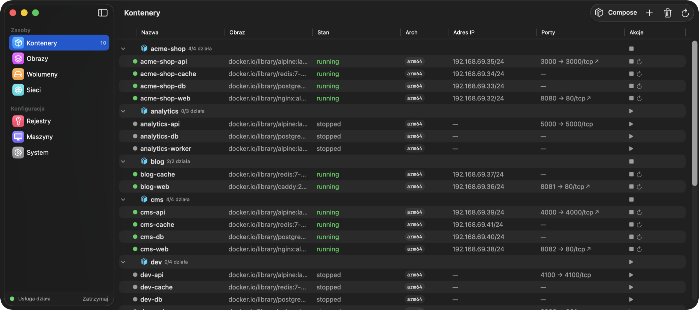
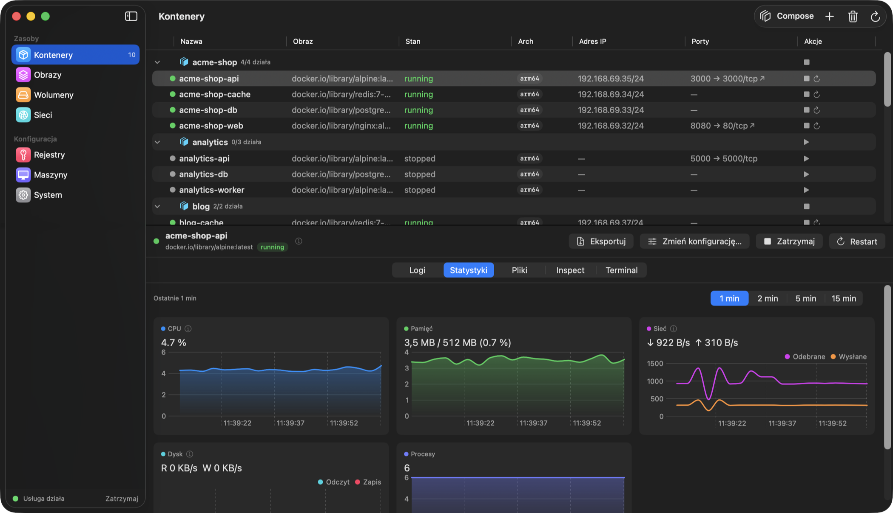
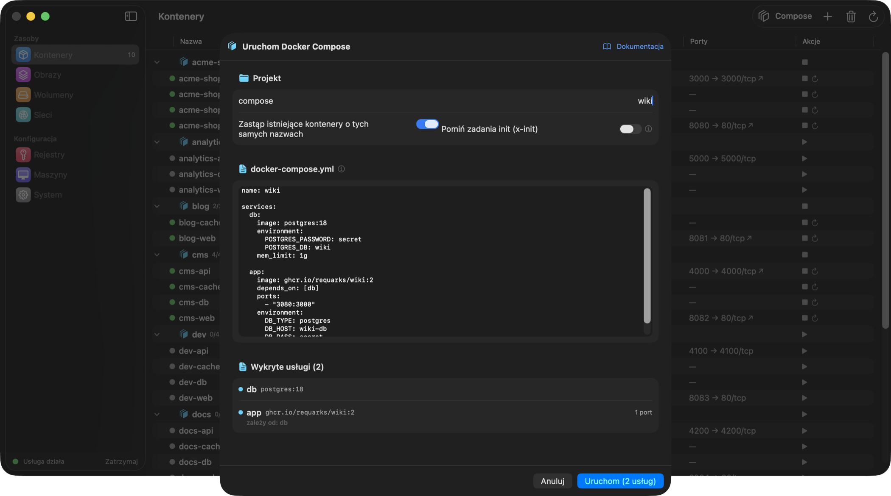
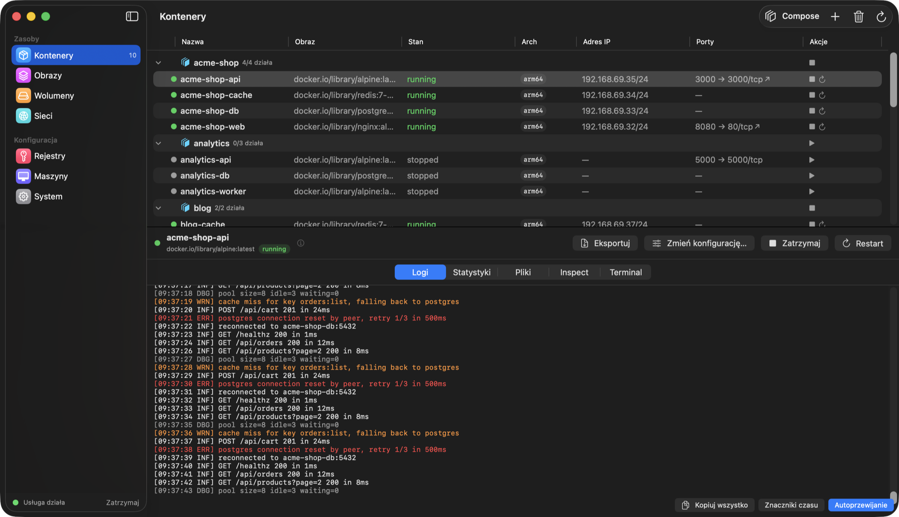
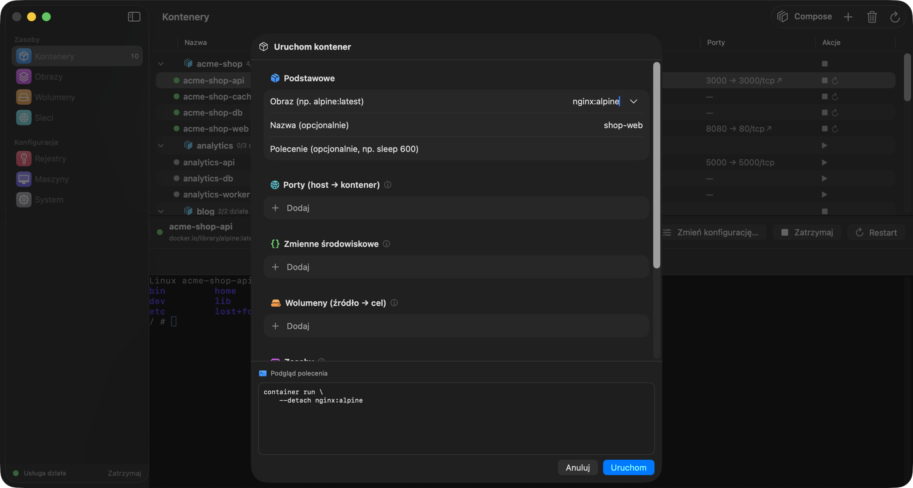
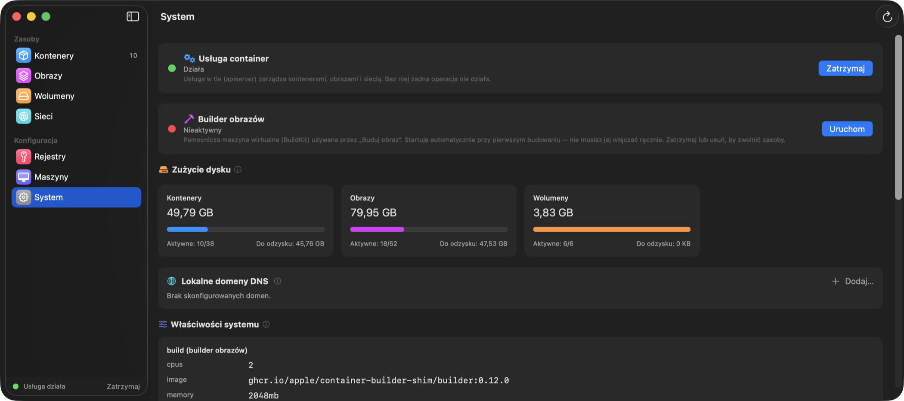

Darmowa i open source · macOS 26 · Apple Silicon
Container Desktop
Natywna aplikacja macOS dla CLI container od Apple.
Pomyśl o Docker Desktop — ale napisanym w SwiftUI i nie reimplementującym niczego:
każda akcja uruchamia oficjalne CLI, więc aplikacja pokazuje dokładnie to, co widzi CLI.
Jeszcze bez notaryzacji — przy pierwszym uruchomieniu wejdź w Ustawienia systemowe → Prywatność i ochrona → Otwórz mimo to,
albo zbuduj ze źródeł: xcodegen generate && xcodebuild.

Wszystko, co potrafi CLI, w jednym oknie
Kontenery
Uruchamianie, zatrzymywanie, restart, odtworzenie ze zmienioną konfiguracją. Logi, przeglądarka plików, inspect i wbudowany terminal (exec -it) dla każdego kontenera.
Statystyki na żywo
Wykresy CPU, pamięci, sieci i dysku odświeżane co sekundę, z oknem czasu i dymkami pod kursorem. Natywne Swift Charts.
Docker Compose
Wklej docker-compose.yml — sieć projektu, kolejność wg zależności, grupowanie kontenerów, jednorazowe zadania x-init, alias host.containers.internal i automatyczne zszywanie nazw usług.
Obrazy
Pull i build z Dockerfile z postępem streamowanym na żywo do dialogu. Uruchomienie kontenera wprost z dowolnego obrazu.
Wolumeny i sieci
Tworzenie, inspect, czyszczenie. Montowanie nazwanego wolumenu albo dowolnego lokalnego folderu w dialogu uruchamiania.
Rejestry i maszyny
Logowanie do prywatnych rejestrów (hasło przez stdin) i pełny cykl życia maszyn kontenerowych.
System i pasek menu
Kontrola usługi z weryfikowanym zatrzymaniem, zużycie dysku, logi usługi, lokalny DNS — plus ikona w pasku menu z akcjami na jedno kliknięcie. Lokalizacja polska, angielska i 简体中文.
Szybki rzut okiem
Wykresy na żywo
CPU, pamięć, sieć i dysk co sekundę, z wybieranym oknem czasu — najedź na wykres, żeby zobaczyć konkretną próbkę.

Projekty Compose
Wklejony docker-compose.yml staje się grupą na liście kontenerów — zbiorczy start, stop i usuwanie, z automatycznie utworzoną siecią projektu.

Logi i terminal
Podgląd logów z kolorowaniem poziomów, ciągłym zaznaczaniem i opcjonalnymi znacznikami czasu — oraz prawdziwy terminal w środku kontenera przez exec -it.

Dialog uruchamiania
Porty, zmienne środowiskowe, wolumeny, zasoby, amd64 + Rosetta — z gotowym do skopiowania podglądem dokładnego polecenia CLI.

System na pierwszy rzut oka
Status usługi i buildera wyjaśniony po ludzku, zużycie dysku z miejscem do odzyskania, czytelne właściwości systemu i logi usługi.
